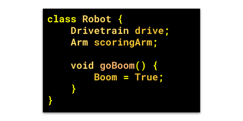
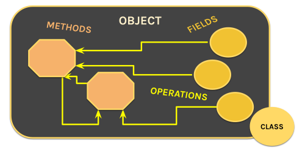
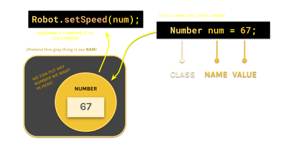
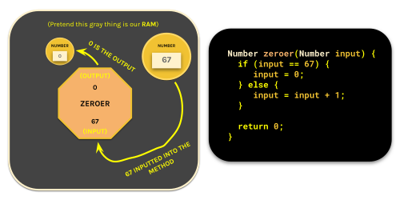
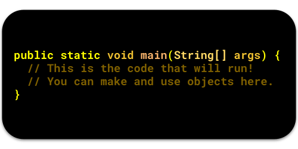
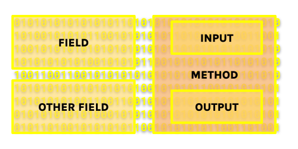

Introduction to Java
Hello young aspiring programmer! This guide will serve as a conceptual introduction to the Java programming language.
Here is what will be covered here:
- What is a program?
- What is computer memory?
- What is Java?
- How is Java code organized?
- How do we store things?
- How do we do things with those stored values?
- Grammar in Java (Syntax)
- Primitives and the Main Class
- Java Native Interface and Signaling
If you are curious on what apps you're gonna need to get started, head over to our Software Setup Guide.
What is a program?
A program is an ordered list of instructions that are done one-after-the-other by the computer. We write programs with code. Code is written in text with a special form of grammar called Syntax.
Every program has to be broken down into actions that a CPU can execute. These actions have to be in binary (long list of 1's and 0's) and are predefined by your CPU using specific codes (ARM and x86 processors are made differently for this reason, they have different sets of commands).
CPU commands can be represented with binary codes such as 0110 or 0111 that the processor can read and understand. Something like drive a robot is NOT understandable by the processor because Intel® decided not to add a "drive robot" command to their CPU's (most laptops don't drive).
What is computer memory?
Memory is essentially a space where our program can store and get data while doing things. It is a gargantuan array of 1's and 0's that all have locations assigned to them. Storing data is useful because you would most likely want to base your program's decisions on calculations that you have made previously.
Memory (Primary Storage) is different from your Secondary Storage (what you would call your main storage or drive) because it is much smaller and much faster.
Another name for memory is RAM, and another name for secondary storage is ROM.
Our programs interact with memory much more than they interact with secondary storage (because we don't store a lot of data when coding a robot). Whenever we refer to storing things or stored data we are referring to storing in memory.
What is Java?
Java is a language that we write code in. Java utilizes English words in a syntax that is very reliant on Curly Braces { } to define when certain segments of code start/stop, Parentheses ( ) for operations and math, and SemiColons; to end specific actions. This lets Java code ignore indentation (and spacing for that matter) in order to make writing/editing code easier.
Java also manages and interacts with the computer's memory for us (instead of us having to do it ourselves), allowing us to store data easily.

How is Java code organized?
Java employs a very popular code-organization technique called Object-Oriented-Programming. In this type of programming we split our actions (like driving the robot) and stored data (like the joystick position from our Xbox Controllers) among objects. Objects can both store data, and act on that stored data.
For example: we can have an Arm object that controls the arm
Things we store in objects are called fields. Actions that we add to objects are called methods. Classes define how a chunk of memory on your computer should be reserved to fit an object. You use classes to create objects.

How do we store things?
Fields (places where you can store data) are easy to make. All you need to do is define the class that you will be using to reserve that chunk of memory for your field; and then create a name that you can use in your code to reference that chunk of memory (or object).

For Example: I can have a field in my Robot object that stores a Drivetrain object.
How do we do things with those stored values?
Methods (actions) are also easy to make. Methods are special in that you can run them with parameters (data that you give the method as you run it) and get an output (data that the method spits out).

For Example: I can have a method that blows up the robot with an input of time (till the robot blows up) and an output of whether or not the explosion was successful.
All you need to do to make a method is...
- Create a name for your method (like 'blowUpRobot' or 'startMatch')
- Define the class of the output (in order to reserve space for that output)
- Define the class of the input (you can't really do much with 10111100110)
- Create names for all of the inputs (so that you can use them in the method itself).
Methods do not have to output anything nor do they have to have inputs.
In these cases, you would switch out the output class with the void keyword.
Inside methods, you can do a couple of things:
- You can create temporary objects called variables.
- You can run other methods that are in your fields/variables.
- You can use logic (such as if-then statements) to make decisions.
- You can use the return keyword to end the method and output stuff.
When you are calling a method that has an output, you can treat your method exactly the same as any other form of stored data (fields or variables).
For example: If I had a method called twoPlusOne which returns 3 (Yes, this is a completely pointless thing to do but bear with me); The statement twoPlusOne() - 4 is a completely valid math expression (that will return -1).
This is also why you need to define the output's class, since you need to reserve a space in memory for the output to exist. You do this by putting the output class before the name.
You need classes for inputs because your program can't really understand the jumble of 1's and 0's otherwise. When you specify the class, those 1's and 0's become actually readable fields and methods. You put your inputs (along with their types) inside the parentheses.
Grammar in Java (Syntax)
Here are some rules for Java Syntax:
-
// Double Slashes create Comments! (these aren't part of the code)
-
End all of your statements with Semicolons;
-
{Wrap classes, methods, and the insides of logic statements in CurlyBraces}
-
(Wrap all method inputs and logic inputs in parenthesis)
-
Do_Not_Include_Spaces_In_Your_Names (Java can't handle it)
Primitives and the Main Class
Java is all about Object-Oriented-Programming. However, not everything is an object. You cannot have "object inside objects inside objects inside objects inside objects-" go on forever! There must be a start point and a stop point.
When you run a Java program, the computer that is running it looks for one thing- The Main method. This method has a very unique structure that looks like this:

Once the program finds this method, it will start here and go down the list one-by-one and run everything. The class that contains the main method is called the Main Class. This is the start point.
Fundamentally, Objects are just a bunch of 1's and 0's. Classes are made to tell you which parts of that bunch mean what (they assign names to specific clumps of 1's and 0's). If you keep breaking things down into their parts, you will reach a point where you can't break things down anymore.
There will be a certain amount of times you can slice up those 1's and 0's before you find things that you can't really break down further. Physics draws this line at the individual 1's and 0's (You can't have some transistor be half-on). However, Java is a programming language that is meant to be actually readable. Because the entire point of having a programming language is so you don't have to interact with 1's and 0's, Java decides to draw this line at numbers, letters, and booleans.
These values are called primitives. Primitives are the only types of data that are not considered objects. They do not have parts to them and cannot be broken down further unless you are a crazy psychopath that likes to use C++. This is the stop point.

Without a class, this would all just be a jumble of 1's and 0's!
Java Native Interface and Signaling
So, we have our objects, our main method, our classes, our numbers and letters; how do these things work to control a physical robot? Well, Java doesn't really have a way of interacting with the motors and other electronics directly. Instead, Java uses C++ to do it for us.
C++ has the power to send raw data through wires!
In order to interact with C++, Java uses these Java Native Interfaces or JNI's which essentially holds C++ code in a way that can be used in your Java program. These JNI's are almost all hidden from you while coding the robot (WPILIB® manages them for us). When the time comes to apply voltage to a motor or change the color of an LED, We run the code in the .jni file (with some special methods) and the computer sends a stream of 1's and 0's down the wires into the electronics devices.
We will revisit this much much later on! Don't worry too much about JNI's for now as a lot of it will be hidden from you.

That is all! Farewell young aspiring programmer! Head over to our Intro to Java 2 to continue your journey.